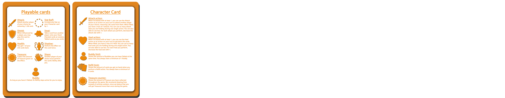
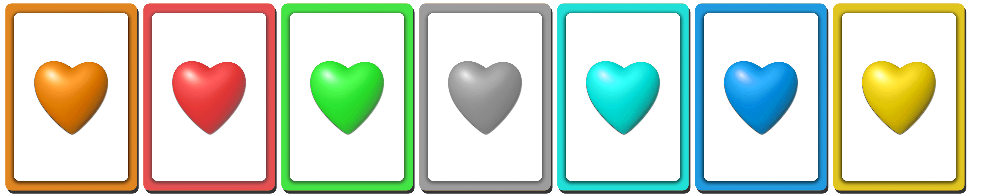
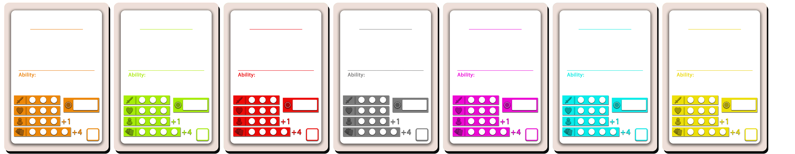
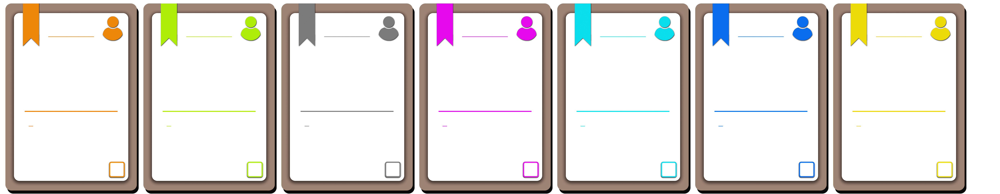

Hobby Project - Social Capital

An Idea Is Born
As my biggest hobby is making tabletop games, one of my friends mentions as a joke on a cabin trip that I should make a card game that reflected our friend group. Like "I play your Grandma. You are stuffed by waffles and cannot take your action".
So, of course I did!! (as a surprise during the next cabin trip) This became the outline for "Social Capital", a card game where the owner build its own deck based on whatever it wants. All cards starts empty where the owner chooses actions from a manual and draws its own card art and name.
The Philosophy
This game is ment to be played as a "Party game" where all players bring in their personalized deck of cards, making a big "Friend"-deck where all Cards are shuffled together.
Each player decides how to build their deck, with abilities given on an Ability Table.
Here, players can build decks based on a given theme (Life, Stealing, ex..), or just choose abilities that fit their image and name thought out for the card.
A game is over when there is only one player left.
At that stage, all players count their points and the winner is declared.
The winner may not be the one lasting player.
Cards
The empty decks contains 5 card types and comes in a variety of colors, to differentiate the cards and make them even more personalized for the player.
Rule Card
Displays the rules of the game.
Life Cards
"Life Cards" determin how many life a player have left in the game. All decks features 6 "Life Cards", which will be lost (and maybe gained) during the game. The players decide how many life to start the game with.
Character Cards
The Character cards have control over the stats throughout the game. It also come with a permanent Ability that is active as long as the player is in the game.
Buddy Cards
Buddies give an additional Ability that is held active when it's Tabled in front of a player.
Event Cards
The cards in play are devidied into 8 different types (to ensure all decks can be playable). In addition, the cards will have a chosen ability on it.
The Ability happens immediately when played.
Its typing (embedded at the right upper corner on each card), happens right after the Ability has taken place.
- Attacks: Remove 1 Life from another player.
- Shield: Play card to cancel a negative effect.
- Health: Get 1 Life.
- Treasure: Get the amount of points as given on the card.
- Stat Buff: Increase any Stat on the Character card by 1.
- Steal: Take any card from another player.
- Shadow: Perform the Ability on that card twice.
- Share: Choose another player to perform the same Ability.